In the scene below, there are many buildings, and depending on where the camera is, many of these are not visible as they are occluded from the camera's vision by other buildings. If it can be determined that a building isn't visible, it can be skipped in the rendering pipeline, increasing rendering performance. This is called occlusion culling. Occlusion culling is becoming increasingly important as modern video games tend towards larger and more complex scenes with more objects.
| 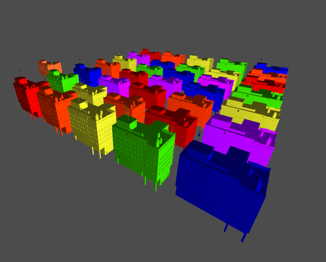 | 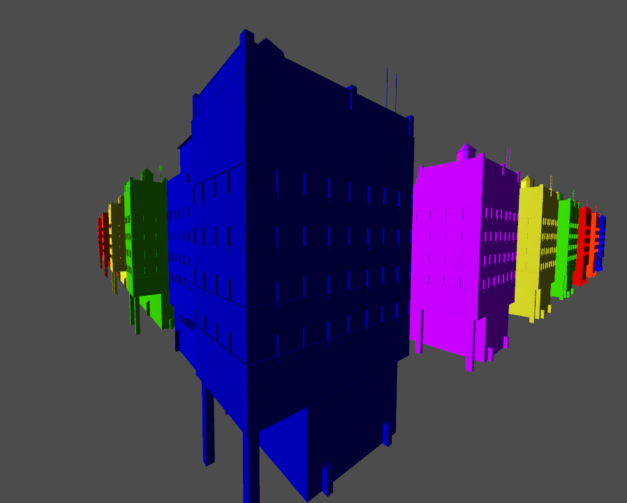 |
Below, this culling effect is illustrated in my demo by adding markers to each building location. A marker is skipped by rendering when its building is skipped.
| 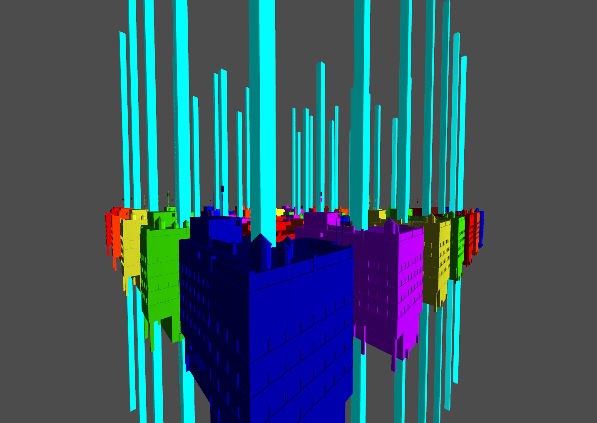 | 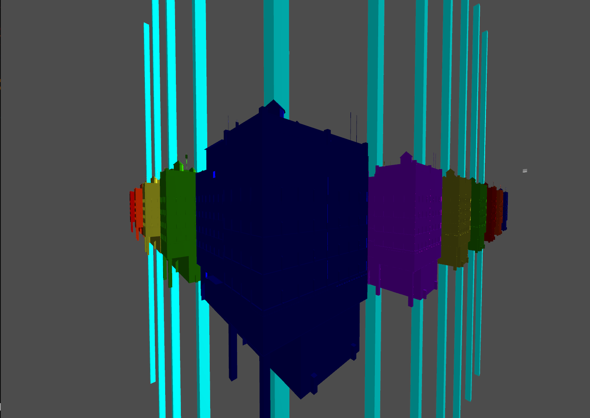 |
There are different methods of occlusion culling, like the idea of "potentially visible sets" -- keeping a list of potentially visible objects in each region of the scene, and only rendering those. Methods like these are more suited to static scenes, but modern games call for an approach more suited to dynamic scenes. One such method is the method of "masked software occlusion culling", proposed in a paper of the same name by authors J. Hasselgren, M. Andersson, and T. Akenine-Möller. I reimplement their method in OpenGL, but with less performance as my implementation doesn't use AVX instructions. My project illustrates this culling effect in two scenes that the user can fly around in. The building model is by Lukas Carnota on cgtrader.com.
|
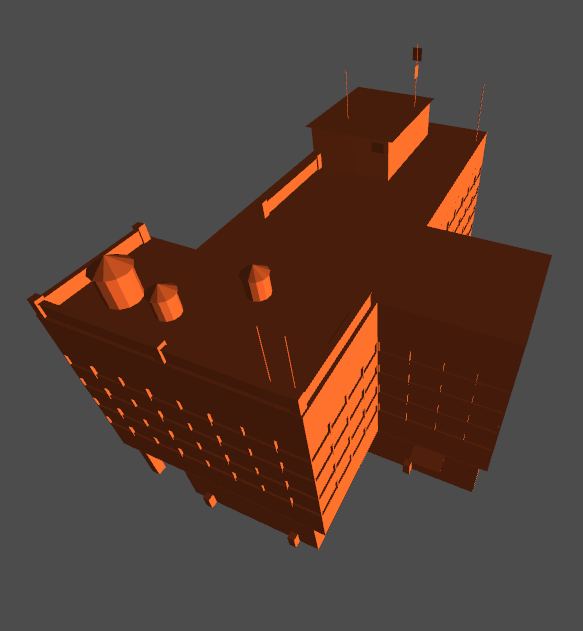
object's main mesh |
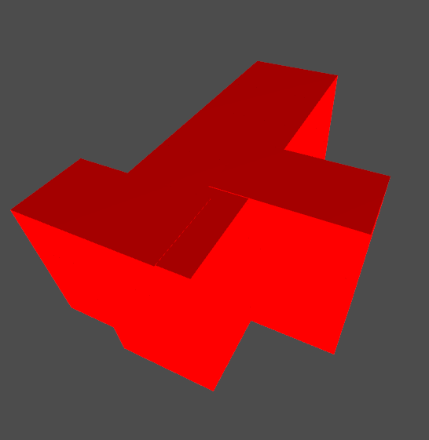
object's occlusion mesh |
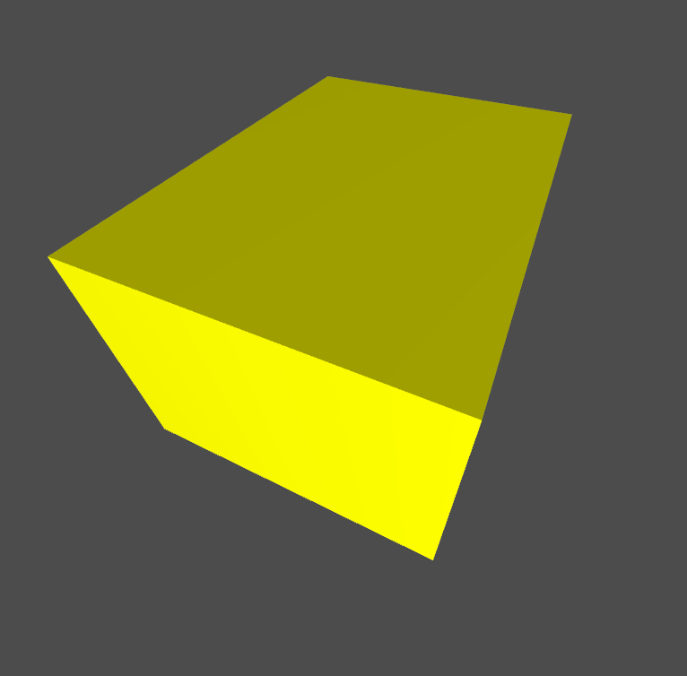
object's bounding box |
The main idea of the algorithm proposed by the authors is to keep a depth buffer on the CPU that is interacted with using two meshes: an object's occlusion mesh, and its bounding box. The bounding box encloses the main mesh and is used for depth tests against the depth buffer. If the bounding box is determined to be visible, then the occlusion mesh, representing parts of the object that block vision, is rasterized into the depth buffer, and then the object's main mesh is drawn in the scene. Rasterizing these two meshes on the CPU is fast if AVX instructions are used, as many pixels can be rasterized at once with just a few instructions, and these are very simple meshes. My implementation is less focused on performance as my system doesn't support recent versions of AVX which have bit shift instructions, and the original paper leaves out some implementation details, making implementation not entirely trivial.
| 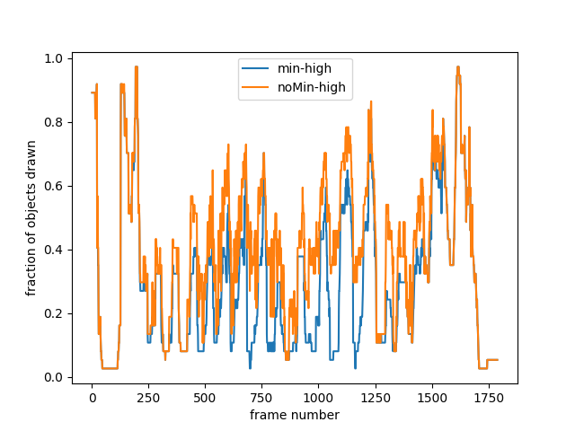 | 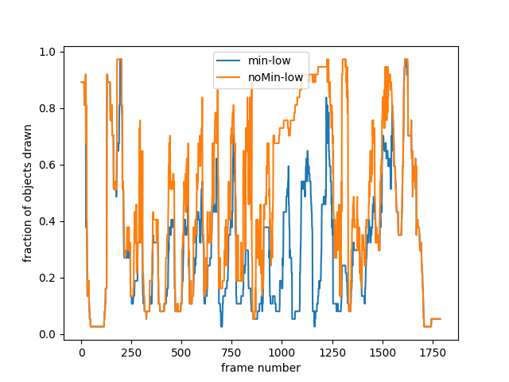 |
| 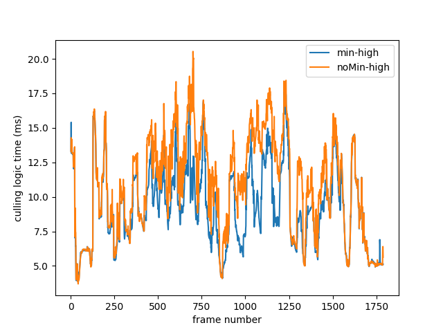 | 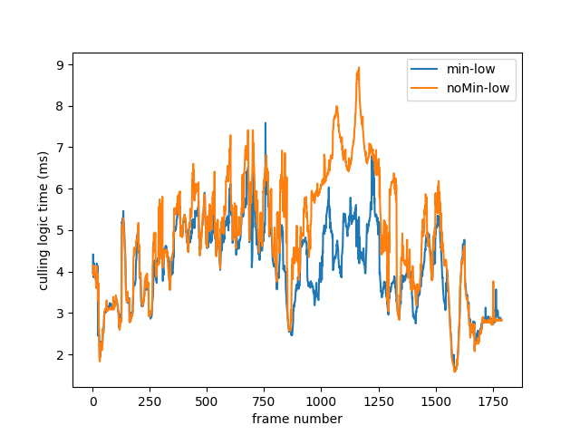 |
Above are some experimental results from my demo. My demo has a replay system that can record and playback actions, and these results are gathered from a replay that moves the camera around the outside of the cluster of buildings at the center of the scene shown earlier. "noMin" denotes the original depth update proposed in the paper, "min" denotes a slightly modified depth update which prevents depth buffer values from moving deeper into the scene, "low" represents a low polygon count occlusion mesh, and "high" represents a high polygon count occlusion mesh which otherwise look the same from the outside.
"Fraction of objects drawn" is the fraction of objects not culled on a frame; lower is better. "Culling logic time" is how long in milliseconds it took the culling logic to run on a frame; lower is better. I found that the best combination of these parameters is to use the slightly modified depth update as it generally runs faster and culls more objects than the original update, and to use the low polygon count occlusion mesh, as it results in the same amount of culling, but with better performance.
| 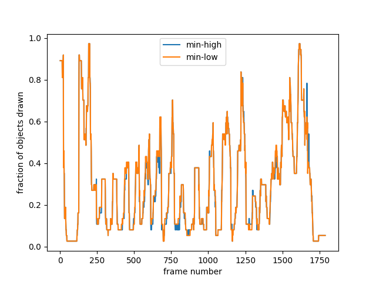 | 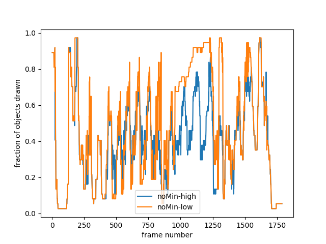 |
The above plots show that the original update is sensitive to the number of polygons in the occlusion mesh, while the modified update isn't.
With the parameters I suggested, in the scene shown which has 37 buildings, my implementation takes on average 4.12 milliseconds per frame, with a maximum of 7.59 milliseconds. As 60 FPS is about 16.6 milliseconds per frame, this implementation uses about 25% - 50% of the time for a frame, so my implementation is not practical, but it could be sped up by a factor of up to 8 using AVX instructions. Results gathered on Windows 10 on an i7-3930k
Hasselgren, Jon, Magnus Andersson, and Tomas Akenine-Möller. "Masked software occlusion culling." Proceedings of High Performance Graphics. 2016. 23-31.